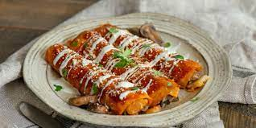

Enchiladas

Homemade Enchilada
Homemade enchiladas have a bit of spiciness and kick to them and are also full of flavor.
Ingredients
- Tortillas
- Tomatos
- Onion
- Garlic
- Salt
- Pepper
- Chicken
- Oil
- Sour Cream
- Lettuce
- Queso Fresco
Steps
- Put chicken to boil with onion and garlic.
- Boil tomatos with garlic and onion.
- Shred lettuce and cruble Queso Fresco cheese.
- Blend boiled tomatos with onion and garlic.
- Shred chicken.
- Saute tomato sauce.
- Microwave tortillas to soften.
- Dip tortilla in tomato sauce.
- Fill with chicken and roll.
- Top with shredded lettuce and crumbled queso fresco cheese. And add a dollop of sour cream.